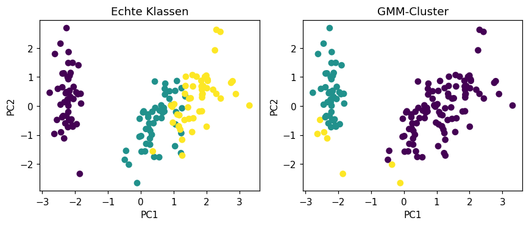
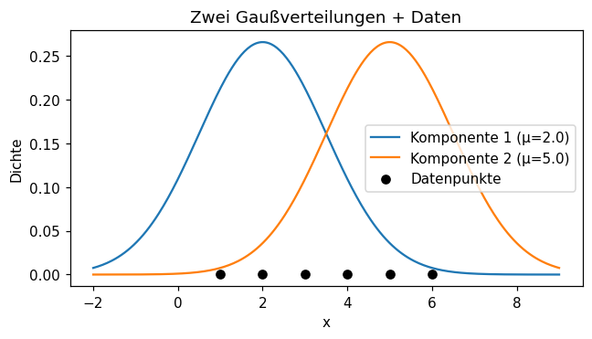

Selbst programmieren
Lies die Aufgabenstellung und vergleiche dein Ziel mit der „Erwarteten Ausgabe“.
Schreibe deine Lösung dann selbst im freien Code-Bereich,
der per Klick auf „▶ Code ausführen“ echtes Python (Pyodide, inkl. numpy/pandas/scikit-learn/scipy)
im Browser ausführt. Erst danach die Musterlösung aufklappen.
Die ersten drei Aufgaben arbeiten mit einem kleinen 1D-Beispiel, die letzten beiden mit dem
standardisierten iris-Datensatz.
🔔 Die Gaußsche Dichtefunktion berechnen
LeichtBerechne die Dichte f(x) der Standardnormalverteilung (μ=0, σ=1) für mehrere x-Werte.
- Nutze
scipy.stats.norm.pdf(x, mu, sigma)mitmu=0, sigma=1. - Berechne die Dichte für
x in [-1, 0, 1, 2]. - Gib für jedes
xden Wert gerundet auf 4 Nachkommastellen aus.
x=-1: pdf=0.2420 x=0: pdf=0.3989 x=1: pdf=0.2420 x=2: pdf=0.0540
💡 Musterlösung anzeigen
Die Dichte der Normalverteilung ist symmetrisch um μ — daher haben x=-1 und
x=1 denselben Wert. Am Maximum x=μ=0 ist die Dichte am höchsten
(1/√(2π) ≈ 0.3989) und fällt mit wachsendem Abstand zu μ schnell ab —
bei x=2 (zwei Standardabweichungen entfernt) ist sie schon auf etwa ein Siebtel
des Maximums gesunken.
from scipy.stats import norm
mu, sigma = 0, 1
for x in [-1, 0, 1, 2]:
val = norm.pdf(x, mu, sigma)
print(f"x={x}: pdf={val:.4f}")x=-1: pdf=0.2420 x=0: pdf=0.3989 x=1: pdf=0.2420 x=2: pdf=0.0540
⚙️ E-Step: Verantwortlichkeiten (gamma) berechnen
MittelBerechne für 6 Datenpunkte die „Verantwortlichkeiten“ (gamma) zweier Gauß-Komponenten — der E-Step des EM-Algorithmus.
- Daten:
X = [1, 2, 3, 4, 5, 6]. Komponente 1:μ₁=2, σ₁=1.5. Komponente 2:μ₂=5, σ₂=1.5. Beide mit Gewichtπ₁=π₂=0.5. - Berechne
r1 = π₁ · pdf(X, μ₁, σ₁)undr2 = π₂ · pdf(X, μ₂, σ₂). - Normalisiere:
gamma1 = r1/(r1+r2),gamma2 = r2/(r1+r2). Gib beide gerundet auf 3 Nachkommastellen aus.
gamma1: [0.966 0.881 0.661 0.339 0.119 0.034] gamma2: [0.034 0.119 0.339 0.661 0.881 0.966]
💡 Musterlösung anzeigen
gamma1[i] gibt an, mit welcher „Wahrscheinlichkeit“ Punkt i zur Komponente 1
gehört — im Gegensatz zu KMeans ist das eine weiche (soft) Zuordnung statt einer
harten 0/1-Entscheidung. Punkt 1.0 liegt nahe μ₁=2 und gehört fast sicher (0.966) zu
Komponente 1, Punkt 6.0 liegt nahe μ₂=5 und gehört fast sicher (0.966) zu Komponente 2.
Punkte in der Mitte (3.0, 4.0) sind unsicherer zugeordnet. gamma1 + gamma2 = 1 für
jeden Punkt.
import numpy as np
from scipy.stats import norm
X = np.array([1.0, 2.0, 3.0, 4.0, 5.0, 6.0])
mu1, mu2 = 2.0, 5.0
sig1, sig2 = 1.5, 1.5
pi1, pi2 = 0.5, 0.5
r1 = pi1 * norm.pdf(X, mu1, sig1)
r2 = pi2 * norm.pdf(X, mu2, sig2)
total = r1 + r2
gamma1 = r1 / total
gamma2 = r2 / total
print("gamma1:", np.round(gamma1, 3))
print("gamma2:", np.round(gamma2, 3))gamma1: [0.966 0.881 0.661 0.339 0.119 0.034] gamma2: [0.034 0.119 0.339 0.661 0.881 0.966]
🔄 M-Step: Mittelwerte neu schätzen
MittelNutze die gamma-Werte aus Aufgabe 2, um die Mittelwerte μ₁, μ₂ neu zu schätzen — der M-Step des EM-Algorithmus.
- Berechne
N1 = sum(gamma1)undN2 = sum(gamma2)(die „effektive“ Anzahl Punkte pro Komponente). - Berechne
mu1_new = sum(gamma1 * X) / N1und analogmu2_new. - Gib
N1, N2undmu1_new, mu2_newgerundet auf 3 Nachkommastellen aus.
N1, N2: 3.0 3.0 mu1_new, mu2_new: 2.29 4.71
💡 Musterlösung anzeigen
Statt wie bei KMeans jeden Punkt fest einer Gruppe zuzuordnen, fließt jeder Punkt mit seinem
gamma-Gewicht in die neue Schätzung beider Mittelwerte ein. N1=N2=3.0
bedeutet: „effektiv“ gehören 3 der 6 Punkte zu jeder Komponente (obwohl die Zuordnung weich ist).
μ₁ bewegt sich von 2.0 auf 2.29 (leicht zu den mittleren Punkten hin),
μ₂ von 5.0 auf 4.71 — E-Step und M-Step würden nun abwechselnd
wiederholt, bis sich die Werte nicht mehr ändern (Konvergenz).
N1 = gamma1.sum()
N2 = gamma2.sum()
mu1_new = (gamma1 * X).sum() / N1
mu2_new = (gamma2 * X).sum() / N2
print("N1, N2:", round(N1, 3), round(N2, 3))
print("mu1_new, mu2_new:", round(mu1_new, 3), round(mu2_new, 3))N1, N2: 3.0 3.0 mu1_new, mu2_new: 2.29 4.71
🚀 GaussianMixture mit sklearn
MittelWende GaussianMixture auf den standardisierten iris-Datensatz an.
- Lade
irisund standardisiere mitStandardScalerzuXs. - Erstelle
GaussianMixture(n_components=3, random_state=42)und rufefit_predict(Xs)auf. - Gib
gmm.converged_,gmm.n_iter_und den Adjusted Rand Index (adjusted_rand_score(y, labels), 3 Nachkommastellen) aus.
Converged: True Iterations: 11 ARI vs true labels: 0.516
💡 Musterlösung anzeigen
converged_=True bedeutet, dass der EM-Algorithmus nach 11 Iterationen
(abwechselnd E-Step und M-Step) ein stabiles Optimum erreicht hat — die Log-Likelihood ändert sich
kaum noch zwischen den Iterationen. Der ARI von 0.516 ist niedriger als der von
KMeans (0.62 in Kapitel 4) — GMM modelliert hier elliptische statt kugelförmige Cluster und
entscheidet sich für eine etwas andere Gruppierung, die nicht ganz so gut zu den drei echten
Iris-Arten passt.
from sklearn.mixture import GaussianMixture
from sklearn.metrics import adjusted_rand_score
gmm = GaussianMixture(n_components=3, random_state=42)
labels = gmm.fit_predict(Xs)
print("Converged:", gmm.converged_)
print("Iterations:", gmm.n_iter_)
print("ARI vs true labels:", round(adjusted_rand_score(y, labels), 3))Converged: True Iterations: 11 ARI vs true labels: 0.516
Wie beim KMeans-Vergleich in Kapitel 4 (Aufgabe 6) zeigen sich auch hier zwei ähnliche, aber nicht identische Gruppierungen: die linke, klar abgetrennte Gruppe (Setosa) wird von GMM perfekt erkannt, an der Grenze zwischen den beiden rechten Gruppen weicht die GMM-Zuordnung etwas von den echten Klassen ab — sichtbar als leicht „vermischte“ Farben in der rechten Grafik. Das passt zum niedrigeren ARI von 0.516 im Vergleich zu KMeans' 0.62.
import matplotlib.pyplot as plt
from sklearn.decomposition import PCA
X_pca = PCA(n_components=2).fit_transform(Xs)
fig, axes = plt.subplots(1, 2, figsize=(8, 3.5))
axes[0].scatter(X_pca[:,0], X_pca[:,1], c=y, cmap='viridis')
axes[0].set_title("Echte Klassen")
axes[1].scatter(X_pca[:,0], X_pca[:,1], c=labels, cmap='viridis')
axes[1].set_title("GMM-Cluster")
for ax in axes:
ax.set_xlabel("PC1"); ax.set_ylabel("PC2")
plt.show()
🧪 predict_proba: weiche Cluster-Zuordnung
SchwerNutze predict_proba, um die weichen Zuordnungswahrscheinlichkeiten des GMM für einzelne Punkte zu betrachten.
- Trainiere wie in Aufgabe 4
GaussianMixture(n_components=3, random_state=42)aufXs. - Gib für die ersten 3 Punkte
gmm.predict_proba(Xs[:3])gerundet auf 3 Nachkommastellen aus. - Gib für dieselben Punkte
gmm.predict(Xs[:3])aus. Stimmen die Maxima vonpredict_probamitpredictüberein?
Proba: [[0. 1. 0.] [0. 1. 0.] [0. 1. 0.]] Predict: [1 1 1]
💡 Musterlösung anzeigen
predict_proba gibt für jeden Punkt die Wahrscheinlichkeit für jede der 3 Komponenten
zurück — die Zeilen summieren sich jeweils zu 1.0. Für die ersten 3 (Setosa-)Punkte ist das GMM sich
hier praktisch sicher: Wahrscheinlichkeit ≈ 1.0 für Komponente 1, ≈ 0 für die anderen
beiden. predict wählt einfach die Komponente mit der höchsten Wahrscheinlichkeit
(argmax) — bei eindeutigen Fällen wie hier stimmen beide Sichten überein, bei
Punkten nahe einer Cluster-Grenze würde predict_proba aber zusätzlich die
Unsicherheit zeigen.
print("Proba:\n", np.round(gmm.predict_proba(Xs[:3]), 3))
print("Predict:", gmm.predict(Xs[:3]))Proba: [[0. 1. 0.] [0. 1. 0.] [0. 1. 0.]] Predict: [1 1 1]
🔔 Zwei Gaußverteilungen mit Datenpunkten plotten
MittelStelle die beiden 1D-Gaußkomponenten aus Aufgabe 2/3 (μ₁=2, σ₁=1.5 und μ₂=5, σ₂=1.5) zusammen mit den 6 Datenpunkten X = [1,2,3,4,5,6] grafisch dar.
- Erzeuge mit
np.linspace(-2, 9, 300)eine x-Achse für die Dichtekurven. - Plotte
norm.pdf(x, mu1, sig1)undnorm.pdf(x, mu2, sig2)als zwei Linien. - Markiere die 6 Datenpunkte zusätzlich mit
plt.scatter(X, np.zeros_like(X))auf der x-Achse. - Füge eine Legende, Achsentitel und einen Plot-Titel hinzu.
Zwei überlappende Gauß-Glockenkurven (Maxima bei x=2 und x=5) sowie 6 schwarze Punkte auf der x-Achse bei x=1..6.

💡 Musterlösung anzeigen
Die beiden Glockenkurven überlappen sich deutlich im Bereich x=3..4 — genau dort
waren in Aufgabe 2 die gamma-Werte am unsichersten (nahe 0.5/0.5). Die Punkte
x=1,2 liegen klar unter der linken Kurve, x=5,6 klar unter der
rechten — das erklärt visuell, warum diese Punkte in Aufgabe 2 mit hoher Sicherheit
(gamma ≈ 0.97 bzw. 0.97) einer Komponente zugeordnet wurden.
import matplotlib.pyplot as plt
xs_plot = np.linspace(-2, 9, 300)
plt.plot(xs_plot, norm.pdf(xs_plot, mu1, sig1), label=f'Komponente 1 (μ={mu1})')
plt.plot(xs_plot, norm.pdf(xs_plot, mu2, sig2), label=f'Komponente 2 (μ={mu2})')
plt.scatter(X, np.zeros_like(X), color='k', zorder=5, label='Datenpunkte')
plt.xlabel("x"); plt.ylabel("Dichte")
plt.title("Zwei Gaußverteilungen + Daten")
plt.legend()
plt.show()